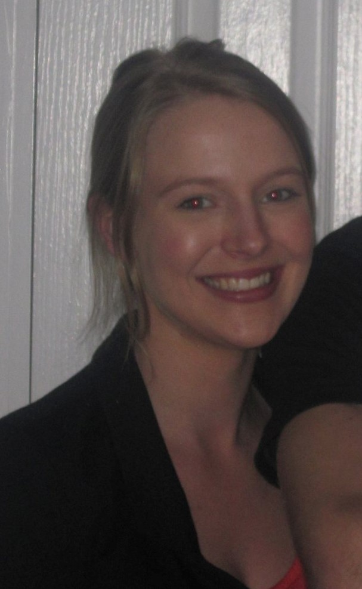

Erin Wright
ePortfolio
INTEREST IN IT
My interest in I.T. probably started over 10 years ago when I worked for a
not-for-profit organisation that modified and maintained elderly and disabled
peoples homes.
The organisation had recieved government funding to develop a database that
could be utilised by other organisations operating government funded home
modification and maintenance services across NSW and Australia.
I was apart of the team invloved in developing this intranet client
database.
I played around with the backend after our hotsing company showed us a
quick, "if we really get keen", rundown of htmls and how to upload files and
modify data fields on our intranet.
By the end of the database development I had saved our organised thousands
of dollars in I.T. database modification and maintenance hours which would have
been billed at a much higher rate than my 18 year old accounts officer rate of
pay.
The hosting company also offered me a job, however I was entering the
accounting industy and didnt know I.T. was the path I wanted to go down.
Since then, I.T. has regularly been of interest to me, from rooting phones
to jailbreak them, to formattiing usb and external hard drives via command
prompt. I've always just had an interest in what else I.T. can do.
Elon Musk is also my biggest hero. Neuralink and spaceX are my favourite
companies. I would love to somehow get involved in anything he is doing. I
believe he has the good of humity at heart and believe in his direction. Im
also big on free speech. :)